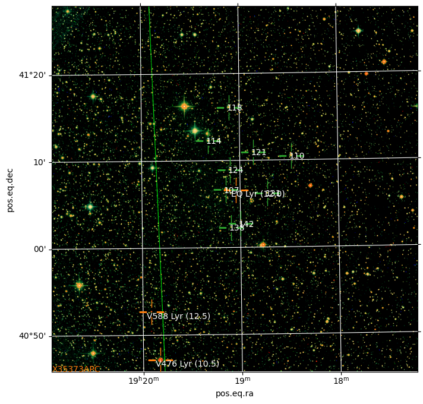
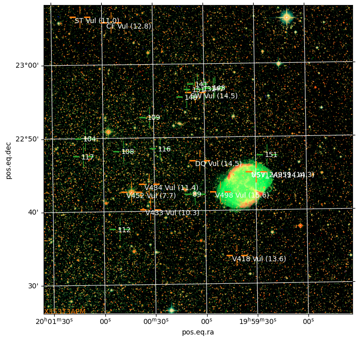

solver = Solver()process
Image processing submodule.
OSO=Telescope(config='~/.config/telescope.ini')Job = namedtuple('Job', 'jid rid done')DB = SqliteDict('telescope.sqlite', autocommit=True)
VSdb = SqliteDict('vstars.sqlite', autocommit=True)if not ('done' in DB):
DB['done'] = set()
if not ('problematic' in DB):
DB['problematic'] = set()
done = DB['done']
problematic = DB['problematic']# VSdb['BE Vul']for vs in VSdb.items():
if 'seq' in vs[1] and vs[1]['seq'] and vs[1]['seq'][0] and vs[1]['seq'][1]:
print(vs[0], len(vs[1]['jobs']) )
else :
# print(vs)
passIN Cyg 1
IP Cyg 1
V1278 Cyg 1
V1280 Cyg 1
V1990 Cyg 1
LV Cyg 1
LX Cyg 1
LY Cyg 1
V681 Cyg 1
V682 Cyg 1
V2173 Cyg 1
V2657 Cyg 1
EQ Lyr 2
V476 Lyr 2
V588 Lyr 2
ST Vul 1
SW Vul 1
CF Vul 1
DQ Vul 1
V418 Vul 1
V433 Vul 1
V434 Vul 1
V452 Vul 1
V498 Vul 1
V571 Vul 1
V686 Cyg 1
V994 Cyg 1
V1285 Cyg 1
V1288 Cyg 1
V1993 Cyg 1plot_sequence
plot_sequence (vs)
process_job
process_job (jid, reprocess=False, cls=True, layer=None)
analyse_job
analyse_job (jid, rid=None, reprocess=False)
reqlst=OSO.get_user_requests(sort='completion')
print(f'Number of users requests: {len(reqlst)}')
complete = [rq for rq in sorted(reqlst, key=lambda r: int(r['requesttime']), reverse=True)
if Telescope.REQUESTSTATUS_TEXTS[int(rq['status'])]=='Complete']
print('Completed:', len(complete))Number of users requests: 1704
Completed: 1679for r in complete[:5]:
j = OSO.get_request(int(r['id']))
o = OSO.get_job(int(j['jid']))
f = OSO.get_obs(o, verbose=True)
analyse_job(o['jid'], reprocess=True)
plt.figure(figsize=(8,8))
process_job(o['jid'], reprocess=True, cls=False)
plt.show()J412679:R759658 (EQ Lyr) 9 December 2023 19:36:32 UTC
Filters: V B R
Getting 93A98C3F from cache
EQ Lyr seq:X35373APC (9)
V476 Lyr seq:X35373APD (3)
V588 Lyr seq:X35373APE (8)
jid 412679: (EQ Lyr)
9 December 2023 19:36:32 UTC
Filters: ('V', 'B', 'R')
Getting 93A98C3F from cache
GCVS n_GCVS RAJ2000 DEJ2000 VarType magMax Period SpType Exists VarName Simbad
mag d
--------- ------ ----------- ----------- ------- ------ ------ ------ ------ --------- ------
EQ Lyr x 19 19 02.63 +41 06 34.5 M 12.000 -- EQ Lyr Simbad
V0476 Lyr x 19 19 49.83 +40 47 08.2 LB 10.500 -- V0476 Lyr Simbad
V0588 Lyr x 19 19 55.00 +40 52 40.0 SRA 12.500 -- V0588 Lyr Simbad
['000-BKK-100', '107', '19:19:08.67', 289.78613281, '41:06:39.6', 41.11100006, '12.415 (0.079)', '10.675 (0.053)', '1.740 (0.095)', '9.820 (0.106)']
['000-BKK-101', '110', '19:18:28.61', 289.61920166, '41:10:29.4', 41.17483521, '11.797 (0.032)', '10.988 (0.017)', '0.809 (0.036)', '10.571 (0.060)']
['000-BKK-102', '114', '19:19:19.21', 289.83004761, '41:12:18.0', 41.20500183, '12.042 (0.036)', '11.412 (0.024)', '0.630 (0.043)', '11.032 (0.027)']
['000-BKK-103', '118', '19:19:06.51', 289.77713013, '41:16:06.3', 41.26841736, '12.359 (0.050)', '11.805 (0.030)', '0.554 (0.058)', '11.419 (0.073)']
['000-BKK-104', '121', '19:18:51.66', 289.71524048, '41:10:57.9', 41.1827507, '12.772 (0.058)', '12.123 (0.036)', '0.649 (0.068)', '11.743 (0.046)']
['000-BKK-105', '124', '19:19:06.24', 289.77600098, '41:08:55.7', 41.14880371, '13.117 (0.041)', '12.398 (0.026)', '0.719 (0.049)', '12.045 (0.029)']
['000-BKK-106', '131', '19:18:43.56', 289.68148804, '41:06:11.6', 41.10322189, '13.759 (0.049)', '13.098 (0.029)', '0.661 (0.057)', '12.805 (0.058)']
['000-BKK-107', '138', '19:19:05.88', 289.77450562, '41:02:18.5', 41.03847122, '14.621 (0.043)', '13.836 (0.025)', '0.785 (0.050)', '13.428 (0.142)']
['000-BKK-108', '142', '19:19:00.07', 289.75030518, '41:02:45.0', 41.04583359, '14.850 (0.049)', '14.157 (0.026)', '0.693 (0.055)', '13.816 (0.134)']
J412676:R759655 (DQ Vul) 9 December 2023 19:48:49 UTC
Filters: R V B
Getting 55C0F8D2 from cache
ST Vul seq:X35373APJ (19)
SW Vul seq:X35373APK (15)
CF Vul seq:X35373APL (18)
DQ Vul seq:X35373APM (14)
V418 Vul seq:X35373APN (4)
V433 Vul seq:X35373APO (14)
V434 Vul seq:X35373APP (14)
V452 Vul seq:X35373APQ (14)
V498 Vul seq:X35373APR (14)
V571 Vul seq:X35373APS (11)
NSV_24959
jid 412676: (DQ Vul)
9 December 2023 19:48:49 UTC
Filters: ('R', 'V', 'B')
Getting 55C0F8D2 from cache
GCVS n_GCVS RAJ2000 DEJ2000 VarType magMax Period SpType Exists VarName Simbad
mag d
--------- ------ ----------- ----------- ------- ------ ---------------- ------ ------ --------- ------
ST Vul x 20 01 13.00 +23 06 34.0 11.000 -- ST Vul Simbad
SW Vul x 20 00 05.21 +22 56 06.6 UGSS 14.500 15.0000000000 SW Vul Simbad
CF Vul x 20 00 54.55 +23 05 45.8 LB 12.800 -- Me CF Vul Simbad
DQ Vul x 20 00 03.01 +22 46 51.7 M 14.500 310.0000000000 DQ Vul Simbad
V0418 Vul 19 59 41.89 +22 33 49.6 M: 13.600 -- V0418 Vul Simbad
V0433 Vul x 20 00 32.54 +22 40 15.4 SR: 10.300 -- V0433 Vul Simbad
V0434 Vul x 20 00 33.23 +22 43 41.2 SR: 11.400 -- V0434 Vul Simbad
V0452 Vul x 20 00 43.71 +22 42 39.0 BY 7.670 12.0390000000 G5V V0452 Vul Simbad
V0498 Vul * 19 59 51.29 +22 42 32.3 UGSU 15.600 -- V0498 Vul Simbad
V0571 Vul * 19 59 29.73 +22 45 13.1 M 14.400 214.0000000000 V0571 Vul Simbad
['000-BJP-942', '89', '20:00:06.21', 300.02587891, '22:42:17.2', 22.70477867, '9.509 (0.028)', '8.939 (0.021)', '0.570 (0.035)', '8.610 (0.027)']
['000-BJP-945', '104', '20:01:10.65', 300.29437256, '22:49:58.1', 22.83280563, '10.861 (0.030)', '10.419 (0.023)', '0.442 (0.038)', '10.182 (0.030)']
['000-BJP-948', '108', '20:00:48.16', 300.20065308, '22:48:12.2', 22.8033886, '11.212 (0.024)', '10.751 (0.011)', '0.461 (0.026)', '10.473 (0.016)']
['000-BJP-947', '109', '20:00:32.38', 300.13491821, '22:52:47.8', 22.87994385, '11.800 (0.033)', '10.852 (0.021)', '0.948 (0.039)', '10.346 (0.027)']
['000-BJP-943', '112', '20:00:50.91', 300.21212769, '22:37:36.1', 22.62669373, '11.598 (0.028)', '11.157 (0.025)', '0.441 (0.038)', '10.900 (0.033)']
['000-BJP-949', '116', '20:00:26.53', 300.11053467, '22:48:31.4', 22.80872154, '12.168 (0.022)', '11.572 (0.010)', '0.596 (0.024)', '11.218 (0.022)']
['000-BJP-944', '117', '20:01:11.82', 300.29925537, '22:47:34.7', 22.79297256, '12.325 (0.045)', '11.723 (0.030)', '0.602 (0.054)', '11.360 (0.046)']
['000-BJV-365', '132', '19:59:59.45', 299.99771118, '22:56:37.1', 22.94363976, '13.843 (0.005)', '13.178 (—)', '0.665 (0.005)', '—']
['000-BJV-366', '141', '20:00:04.04', 300.0168457, '22:57:15.8', 22.95438957, '15.032 (0.028)', '14.128 (0.020)', '0.904 (0.034)', '—']
['000-BJV-367', '143', '19:59:53.78', 299.97409058, '22:56:45.8', 22.94605637, '15.093 (0.009)', '14.262 (0.005)', '0.831 (0.010)', '—']
['000-BJV-368', '147', '19:59:54.65', 299.97772217, '22:56:37.2', 22.94366646, '15.551 (0.009)', '14.711 (0.005)', '0.840 (0.010)', '—']
['000-BJV-369', '148', '20:00:10.41', 300.04336548, '22:55:30.5', 22.92513847, '15.656 (0.006)', '14.762 (0.005)', '0.894 (0.008)', '—']
['000-BCK-030', '151', '19:59:23.26', 299.84692383, '22:47:31.3', 22.79202652, '15.957 (0.019)', '15.140 (0.017)', '0.817 (0.025)', '14.623 (0.019)']
['000-BJV-370', '151', '20:00:05.85', 300.02438354, '22:56:32.0', 22.9422226, '16.021 (0.033)', '15.085 (0.029)', '0.936 (0.044)', '—']
f_NSV NSV u_NSV n_NSV RAJ2000 DEJ2000 VarType magMax SpType VarName
mag
----- ----- ----- ----- ---------- --------- ------- ------ ------ -------
24959 x 19 59 29.9 +22 45 13 M: 14.30
J412674:R759653 (IP Cyg) 9 December 2023 19:59:09 UTC
Filters: R V B
Getting 4F0A8ABD from cache
IN Cyg seq:X35373APW (22)
IP Cyg seq:X35373APX (12)
V1278 Cyg seq:X35373APY (15)
V1280 Cyg seq:X35373APZ (20)WARNING: FITSFixedWarning: EPOCH = 'REAL'
a floating-point value was expected. [astropy.wcs.wcs]
WARNING: FITSFixedWarning: RADECSYS= 'ICRS'
the RADECSYS keyword is deprecated, use RADESYSa. [astropy.wcs.wcs]
WARNING: FITSFixedWarning: 'datfix' made the change 'Set MJD-OBS to 60287.812345 from DATE-OBS'. [astropy.wcs.wcs]
WARNING: FITSFixedWarning: EPOCH = 'REAL'
a floating-point value was expected. [astropy.wcs.wcs]
WARNING: FITSFixedWarning: RADECSYS= 'ICRS'
the RADECSYS keyword is deprecated, use RADESYSa. [astropy.wcs.wcs]
WARNING: FITSFixedWarning: 'datfix' made the change 'Set MJD-OBS to 60287.812345 from DATE-OBS'. [astropy.wcs.wcs]
WARNING: FITSFixedWarning: EPOCH = 'REAL'
a floating-point value was expected. [astropy.wcs.wcs]
WARNING: FITSFixedWarning: RADECSYS= 'ICRS'
the RADECSYS keyword is deprecated, use RADESYSa. [astropy.wcs.wcs]
WARNING: FITSFixedWarning: 'datfix' made the change 'Set MJD-OBS to 60287.820848 from DATE-OBS'. [astropy.wcs.wcs]
WARNING: FITSFixedWarning: EPOCH = 'REAL'
a floating-point value was expected. [astropy.wcs.wcs]
WARNING: FITSFixedWarning: RADECSYS= 'ICRS'
the RADECSYS keyword is deprecated, use RADESYSa. [astropy.wcs.wcs]
WARNING: FITSFixedWarning: 'datfix' made the change 'Set MJD-OBS to 60287.820848 from DATE-OBS'. [astropy.wcs.wcs]
WARNING: FITSFixedWarning: EPOCH = 'REAL'
a floating-point value was expected. [astropy.wcs.wcs]
WARNING: FITSFixedWarning: RADECSYS= 'ICRS'
the RADECSYS keyword is deprecated, use RADESYSa. [astropy.wcs.wcs]
WARNING: FITSFixedWarning: 'datfix' made the change 'Set MJD-OBS to 60287.828023 from DATE-OBS'. [astropy.wcs.wcs]
<Figure size 640x480 with 0 Axes><Figure size 640x480 with 0 Axes>
<Figure size 640x480 with 0 Axes><Figure size 640x480 with 0 Axes>ConnectionError: ('Connection aborted.', RemoteDisconnected('Remote end closed connection without response'))# for jid in VSdb['BI Her']['jobs']:
# if jid in problematic:
# print(f'{jid} problematic')
# continue
# analyse_job(jid, reprocess=True)
# plt.figure(figsize=(8,8))
# process_job(jid, reprocess=True, cls=False)
# plt.show()userjobs = ((int(OSO.get_request(int(j['id']))['jid']), int(j['id'])) for j in complete[:3])
for n, (jid, rid) in enumerate(userjobs):
if jid in (problematic | done):
continue
print(f"{n}:R{rid}:J{jid}")
try :
if analyse_job(jid, rid, True):
done |= {jid}
except ConnectionError:
print('Unable to finish')0:R759658:J412679
J412679:R759658 (EQ Lyr) 9 December 2023 19:36:32 UTC
Filters: V B R
Getting 93A98C3F from cache
EQ Lyr seq:X35373APC (9)
V476 Lyr seq:X35373APD (3)
V588 Lyr seq:X35373APE (8)
1:R759655:J412676
J412676:R759655 (DQ Vul) 9 December 2023 19:48:49 UTC
Filters: R V B
Getting 55C0F8D2 from cache
ST Vul seq:X35373APJ (19)
SW Vul seq:X35373APK (15)
CF Vul seq:X35373APL (18)
DQ Vul seq:X35373APM (14)
V418 Vul seq:X35373APN (4)
V433 Vul seq:X35373APO (14)
V434 Vul seq:X35373APP (14)
V452 Vul seq:X35373APQ (14)
V498 Vul seq:X35373APR (14)
V571 Vul seq:X35373APS (11)
NSV_24959
2:R759653:J412674
J412674:R759653 (IP Cyg) 9 December 2023 19:59:09 UTC
Filters: R V B
Getting 4F0A8ABD from cache
IN Cyg seq:X35373APW (22)
IP Cyg seq:X35373APX (12)
V1278 Cyg seq:X35373APY (15)
V1280 Cyg seq:X35373APZ (20)
V1445 Cyg
V1446 Cyg
V1990 Cyg seq:X35373AQC (23)
NSV_24881 WARNING: FITSFixedWarning: EPOCH = 'REAL'
a floating-point value was expected. [astropy.wcs.wcs]
WARNING: FITSFixedWarning: RADECSYS= 'ICRS'
the RADECSYS keyword is deprecated, use RADESYSa. [astropy.wcs.wcs]
WARNING: FITSFixedWarning: 'datfix' made the change 'Set MJD-OBS to 60287.812345 from DATE-OBS'. [astropy.wcs.wcs]
WARNING: FITSFixedWarning: EPOCH = 'REAL'
a floating-point value was expected. [astropy.wcs.wcs]
WARNING: FITSFixedWarning: RADECSYS= 'ICRS'
the RADECSYS keyword is deprecated, use RADESYSa. [astropy.wcs.wcs]
WARNING: FITSFixedWarning: 'datfix' made the change 'Set MJD-OBS to 60287.820848 from DATE-OBS'. [astropy.wcs.wcs]
WARNING: FITSFixedWarning: EPOCH = 'REAL'
a floating-point value was expected. [astropy.wcs.wcs]
WARNING: FITSFixedWarning: RADECSYS= 'ICRS'
the RADECSYS keyword is deprecated, use RADESYSa. [astropy.wcs.wcs]
WARNING: FITSFixedWarning: 'datfix' made the change 'Set MJD-OBS to 60287.828023 from DATE-OBS'. [astropy.wcs.wcs]